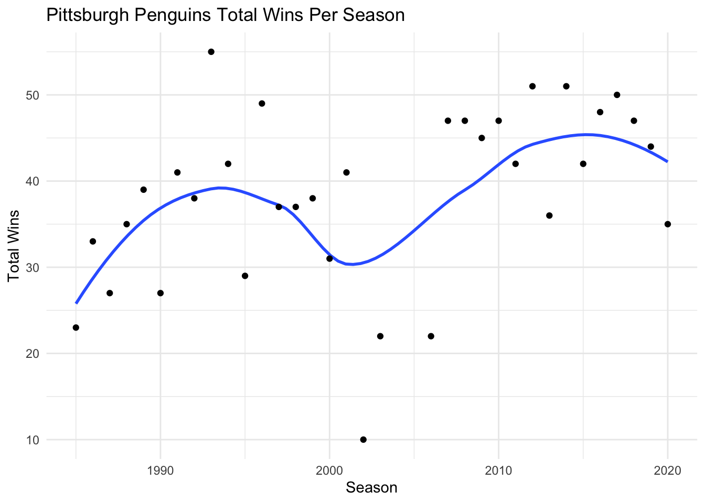
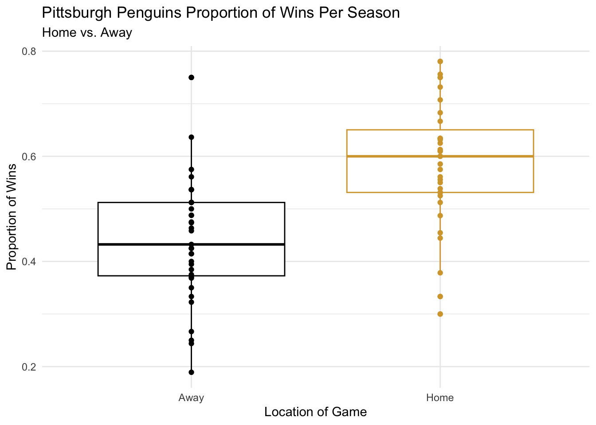
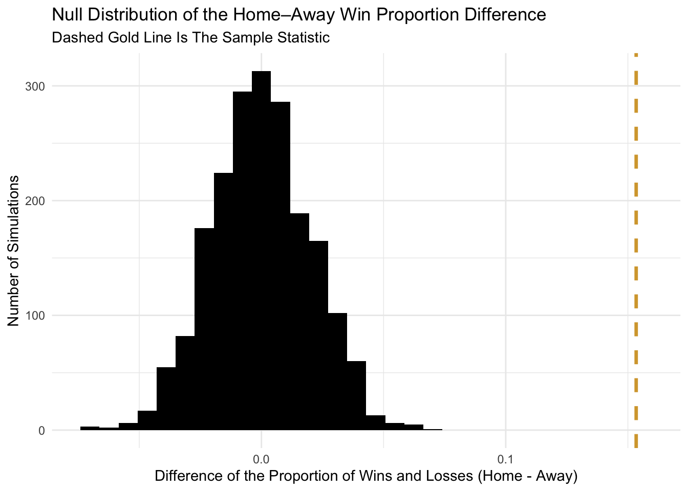

library(tidyverse)
library(lubridate)Pittsburgh Penguin Proportion Permutation
Understanding Home-Ice Advantage In NHL Games Using Penguins Data
Picture from Pensburgh
Introduction
We investigated whether the Pittsburgh Penguins’ have a home-ice advantage using a permutation test. Our outcome is game result (W/L), and our explanatory variable is location of the game (Home/Away). We attempted to model the existence of home-ice advantage on NHL games. For the purpose of the project, we looked only at the Pittsburgh Penguins. According to our expertise, the Penguins generally represent an average NHL team. Also, this is a shoutout to the palmer penguins package. We first summarized the observed home–away difference. Then we simulated the null by shuffling the location labels. Finally we compared the observed statistic to the null distribution to assess significance.
Libraries
The following are the libraries that were used in this permutation test.
Import Data
We imported the following data from the TidyTuesday community repository. Specifically, the data comes from HockeyReference.com.
game_goals <- readr::read_csv('https://raw.githubusercontent.com/rfordatascience/tidytuesday/main/data/2020/2020-03-03/game_goals.csv')Data Manipulaton
Here we changed the unit of observation in the game_goals from player per game in the NHL to statistics per game for the Pittsburgh Penguins.
pit <- game_goals |>
filter(team == "PIT") |> # filtering for Penguins
group_by(date, location, season, outcome) |> # changing unit of observation
summarize(goals_sum = sum(goals)) |>
ungroup()
pit# A tibble: 2,512 × 5
date location season outcome goals_sum
<date> <chr> <dbl> <chr> <dbl>
1 1984-10-11 Away 1985 L 1
2 1984-10-13 Away 1985 L 0
3 1984-10-17 Home 1985 W 0
4 1984-10-20 Home 1985 W 0
5 1984-10-21 Away 1985 L 0
6 1984-10-24 Home 1985 L 0
7 1984-10-27 Home 1985 W 0
8 1984-10-30 Home 1985 W 0
9 1984-10-31 Away 1985 W 1
10 1984-11-03 Home 1985 L 0
# ℹ 2,502 more rowsPreliminary Data Visualizations
We included this graph below to illustrate the proportion of home to away games for the Pittsburgh Penguins in a given season. The reason we felt the need to perform this task is because we wanted to make sure that there was not a disproportionate percent of home or away games over time that would affect their win totals and/or percentages.
pit |>
group_by(season, location) |>
summarize(totals = n()) |>
ggplot(aes(x = season, y= totals, fill = location)) +
geom_col(position="fill") +
labs(title = "Proportion of Home to Away Games Pittsburgh Penguins",
x = "Season",
y = "",
fill = "") +
scale_fill_manual(values = c("black", "#d6a53a")) +
theme_minimal()
We looked at the Pittsburgh Penguins proportion of wins per season based on whether they played at home or away in the graph below. From data reviewed from 1984-2020, on average, the Penguins had a higher proportion of wins at home versus away.
pit |>
group_by(season, location) |>
summarize(prop_wins = mean(outcome == "W")) |>
ggplot(aes(x = location , y = prop_wins, color = location)) +
geom_boxplot() +
geom_point() +
labs(title = "Pittsburgh Penguins Proportion of Wins Per Season " ,
subtitle = "Home vs. Away",
y = "Proportion of Wins",
x = "Location of Game",
color ="") +
scale_color_manual(values = c("black", "#d6a53a")) +
theme_minimal() +
theme(legend.position = "none")
Permutation
We elected to perform a permutation test to confirm that the team being at home leads to a higher percent of winning overall in comparison to playing away. Our null hypothesis was that the proportion of wins at home and away is equal. To make it more clear, the null hypothesis (H₀) is that the proportion of wins at home and away are equal for NHL games (no home-ice advantage). The alternative hypothesis (H₁) is that the proportion of wins at home is greater than the proportion of wins away for NHL games. Below we calculated our sample statistic which was only the Pittsburgh Penguins (1984-2020) to generalize a home-ice advantage. Our sample statistic was the difference between the home and away win proportions. In other words, proportion of wins at home subtracted by proportion of wins away.
sample_statistics <- pit |>
group_by(location) |>
summarize(prop_of_wins = mean(outcome == "W")) |>
pivot_wider(names_from = location,
values_from = prop_of_wins) |>
mutate(diff = Home - Away) |>
pull(diff)
sample_statistics[1] 0.1533897To create a null hypothesis sampling distribution, we randomly shuffled our Penguins location data. We did this to simulate what outcomes would look like if location assignments were random. We want to test whether there is a home-ice advantage by randomly shuffling the “Home” and “Away” labels and recalculating the difference between the shuffle and the sample value each time. The perm_stat function performed this permutation.
perm_stat <- function(x){
pit |>
ungroup() |>
mutate(location_perm = sample(location)) |>
group_by(location_perm) |>
summarize(prop_of_wins = mean(outcome == "W")) |>
pivot_wider(names_from = location_perm,
values_from = prop_of_wins) |>
mutate(diff = Home - Away) |>
pull(diff)
}We then repeated this process many times to create a null hypothesis sampling distribution. So I used map_dbl(). We ran the function 2,000 times and stored each simulated difference in a numeric vector. With this we were able to build a null distribution to compare against the observed difference.
set.seed(47) # setting the seed
perm_stat_list <- map_dbl(1:2000, perm_stat)
perm_df <- data.frame(perms = perm_stat_list)H₀ Sampling Distribution
perm_df |>
ggplot(aes(x = perms)) +
geom_histogram(fill = "black") +
geom_vline(xintercept = sample_statistics, color = "#d6a53a",
linewidth = 1.2, linetype = "dashed")+
labs(title = "Null Distribution of the Home–Away Win Proportion Difference",
subtitle = "Dashed Gold Line Is The Sample Statistic",
x = "Difference of the Proportion of Wins and Losses (Home - Away)",
y = "Number of Simulations") +
theme_minimal()
The plot above showed that most simulated win-proportion differences is near zero. These values are typical if there’s no home-ice advantage. The dashed gold line, the sample statistic, is far to the right of the null distribution. Because such the extreme value is unlikely to occur by random chance, it can be inferred that playing at home increases the proportion of winning. This graph implies a true home-ice advantage.
perm_df |>
summarize(p_value = mean(perm_df >= sample_statistics)) p_value
1 0A p-value of 0 suggests that none of the 2,000 random permutations produced a difference at least as large as the observed one. This indicates the observed home–away win difference was very unlikely to occur by chance. This provided strong evidence of a home-ice advantage. The permutation test showed that location of the game has a statistically significant effect on winning.
Conclusion
The observed home–away win proportion difference lies in the extreme tail of the null distribution (two-sided p < 0.001). This indicates the difference is unlikely under the null. We reject the null. This supports a real home-ice advantage. Results are robust to randomization with 2,000 permutations. Future work could adjust for opponent strength in a given season.